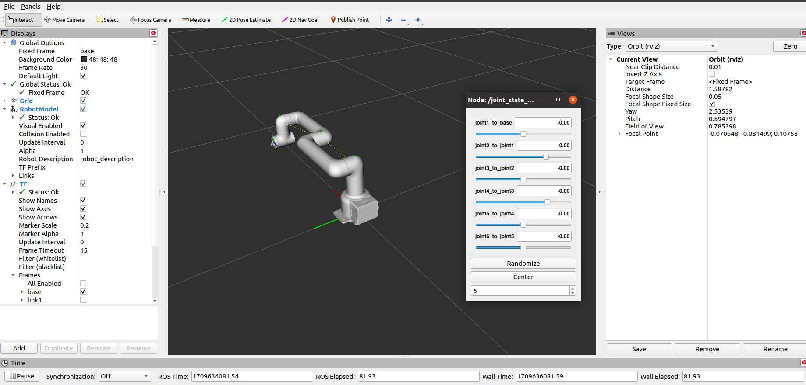

机械臂的控制
1 开启TCP服务器功能
1.1 登录RoboFlow操作系统
机器人上电开机后，使用VNC Viewer进入树莓派，登录RoboFlow操作系统

1.2 启动机器人
进入配置中心，点击启动机器人按钮


1.3 检查TCP服务器是否开启
返回主菜单，点击编写程序后，再点击空白程序，进入程序编辑界面后，点击配置按钮，点击网络/串口选项,检查TCP服务器是否开启，通常情况下，TCP服务器是默认开启的，若未开启，则需手动开启，也手动设置IP地址，如设置成192.168.1.159。


2 滑块控制
注意：TCP通信需确保本地虚拟机电脑与MyCobot Pro630系统使用同一网络，同一网段。
打开一个控制台终端，运行命令：
roslaunch mycobot_630 mycobot_630_slider.launch
它将打开 rviz 和一个滑块组件，你将看到如下画面：

接着你可以通过拖动滑块来控制 rviz 中的模型移动。如果你想让真实的 MyCobot Pr630 跟着一起运动，需要再打开一个控制台终端，运行命令：
# MyCobot Pro 630默认的Socket IP地址为192.168.1.159，端口号为5001，若不一致，可根据实际的IP地址进行修改。
rosrun mycobot_630 mycobot_630_slider.py _ip:=192.168.1.159 _port:=5001
请注意：由于在命令输入的同时机械臂会移动到模型目前的位置，在您使用命令之前请确保rviz中的模型没有出现穿模现象。 不要在连接机械臂后做出快速拖动滑块的行为，防止机械臂损坏。
3 Moveit使用
mycobot_630 现已集成了 MoveIt 部分。
打开一个控制台终端(快捷键Ctrl+Alt+T)，运行命令：
roslaunch mycobot_630_moveit mycobot630_moveit.launch
运行效果如下：

可以计划并执行，演示效果：
如果需要让真实的机械臂同步执行计划，需要再打开一个控制台终端，运行命令：
# MyCobot Pro 630默认的Socket IP地址为192.168.1.159，端口号为5001，若不一致，可根据实际的IP地址进行修改。
rosrun mycobot_630_moveit sync_plan.py _ip:=192.168.1.159 _port:=5001
然后再次计划并执行，演示效果：